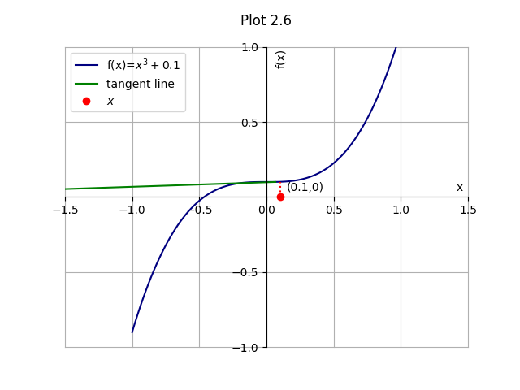

The above plot 1.1 shows the first iteration of the algorithm. x0 is the initial guess of pi/3. This gives us the abscissa of x1 equal to 0.68. Since this is not close enough to the root, the program proceeds towards next iteration.
Now, x2 is considered for evaluation in the next iteration of the algorithm. As, can be seen, convergence towards the root is faster than in case of bisection method. After further iterations in a similar manner, value of f(xi) approaches zero. When its value gets close enough to zero, within permissible limits of approximation of result (provided by user), the value of that xi is returned as value of a root of the function. Drawbacks: 1. Fast convergence comes at a price of uncertainity of finding the root. Bisection method was certain to give value of a root provided its presence in the interval. But, estimate of root can overshoot limits in certain cases of Newton Raphson method. For the above example, suppose the initial guess was x=pi/2. This case is depicted in the following graph.
Here, value of x1 cannot be determined for next iteration, thus failing the algorithm. Therefore, this method does not give desired results in case our guess is close to a local maxima or minima. 2. A bad choice of value of x can lead to repetition in values of x in the subsequent iterations. This way, we never get the value of root because we remain stuck in the loop, as shown in graph. Such oscillations between finite number of values is a common pitfall, most often encountered in quadratic polynomials.
3. This method cannot be applied where the first derivative of the function cannot be determined or is discontinuous. Also, it fails when function is non-differentiable at root. 4. If the initial guess is not close enough to the root, the results achieved are not good enough. 5. A minor fluctuation in the value of function at some point can cause our estimate to overshoot to large distances from root, thus diverging instead of converging. Similar anomaly occurs at the point of inflection. A point of inflection is a point on graph at which the shape of curve changes from convex to concave and vice versa.Overshooting of estimate occurs when such points are approached in a manner similar to that in case of a maxima or minima as shown in graphs.
When the inflection point is approached, the estimate of root overshoots the limits.

6. Division by zero may occur in cases where f'(xi)=0, resulting in error. 7. Sometimes, the root you might expect is not the one returned by the algorithm. Such are the cases of root jumping, as shown in graph below. Points of evaluation where this phenomenon occurs are visualized using Newton fractals.

Although, the initial guess is closer to the root at x=0, after the first iteration, the estimate jumps to a point closer to the root at x=-pi. An alternative to counter some of such situations is to make a combined use of bisection and Newton Raphson method. Bisection method is used to determine the bounds for value of x. Whenever, Newton Raphson method fails to get a new value of x within those bounds, bisection method is applied to get new bounds for Newton Raphson method to operate. A new value is required to avoid returning of same two roots alternately. Although this ascertains that a root will be returned if present, the execution time of this algorithm will be slower than that of ordinary Newton Raphson method. The Newton Raphson Method can also be extended to argand plane for finding roots of complex numbers. Their further analysis results in formation of fractals, an intersting topic for sometime later. All graphs are plotted using python matplotlib. See plots index for programs